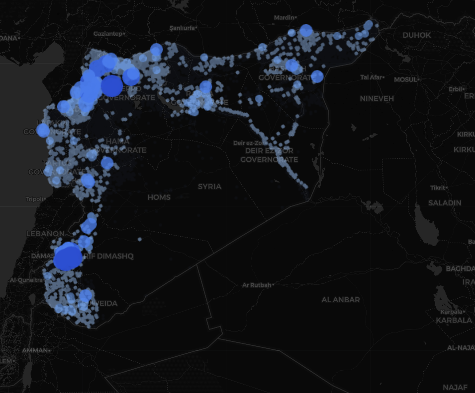
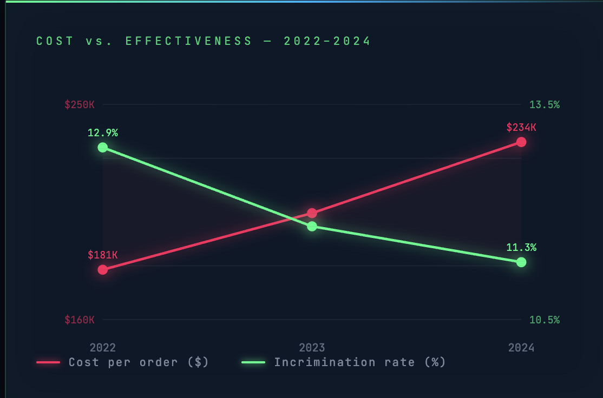
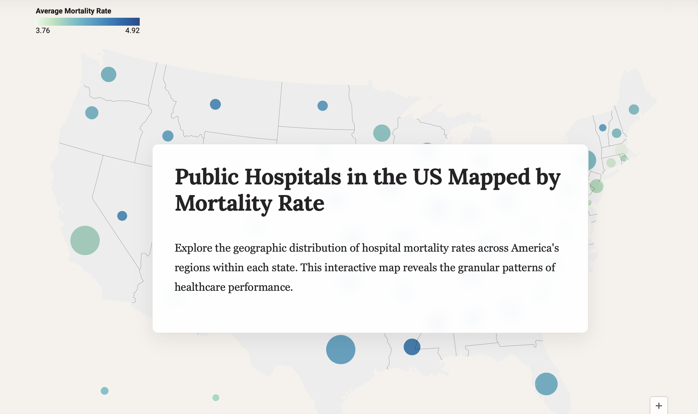
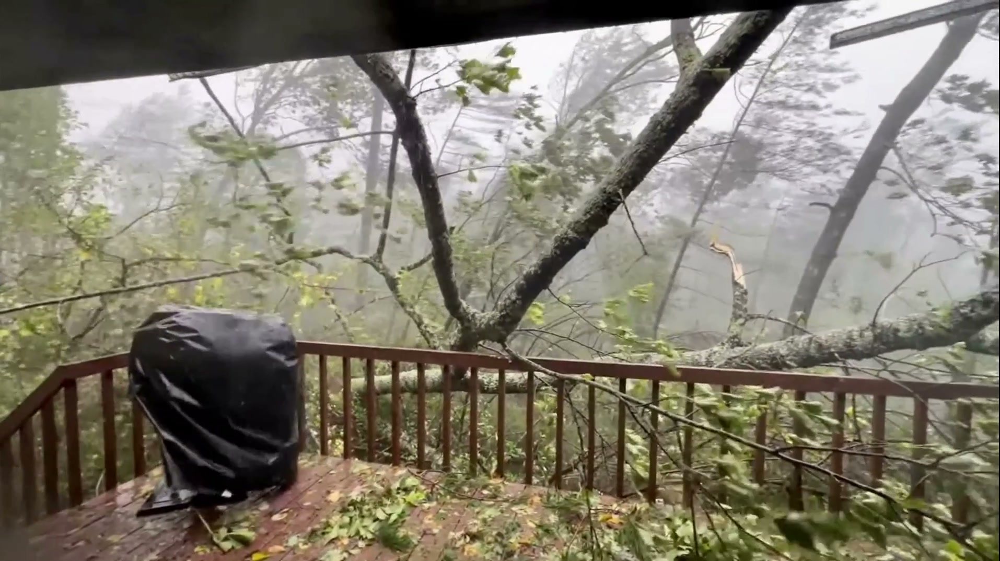
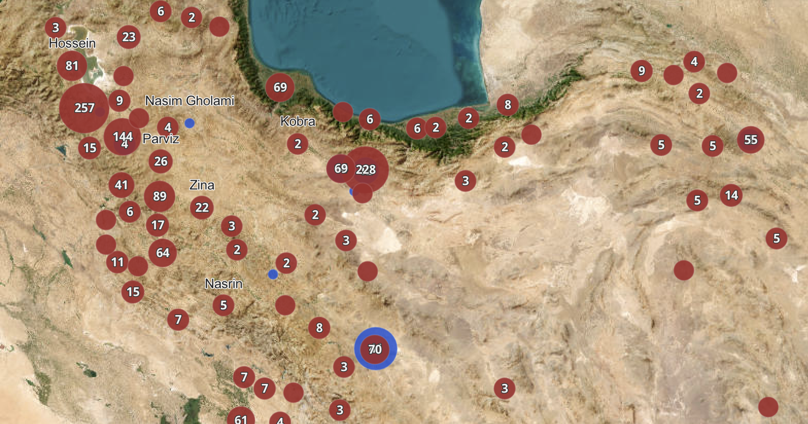

Dagmar
Rothschild
Multimedia Journalist & Human Rights Field Researcher
My work is driven by the belief that visualized data and documentation has the power to revolutionize the way we present narratives in the pursuit of accountability.
Selected Work

Leaving Limbo — Syria's Displacement Crisis
When the Assad government fell, nearly 2 million Syrians came home. Six million remain displaced. An interactive scrollytelling investigation mapping simultaneous displacement and return across 8,325 monitored communities.
Read the story →
Wiretap Waste — A $258M Story
A $258 million federal surveillance expenditure with documented waste and persistent effectiveness gaps. A data-driven investigation into wiretapping spending and accountability.
Read the story →
The Algorithm Was Supposed to Save Lives. Deaths Rose Instead.
How UPMC's machine learning algorithm for predicting surgical complications coincided with rising mortality rates — a data investigation into medical AI and institutional accountability.
Read the story →
The South Is Suffering — Hospital Mortality Across the Bible Belt
Interactive choropleth mapping hospital mortality rates reveals stark geographic clustering in southern states, with county-level data exposing the depth of disparity.
Explore the map →
The Courtroom at the Center of Everything
How domestic courts became the last line of international justice. Data on genocide prosecutions, the Rome Statute, and the widening gap between international law and enforcement.
Read the story →
Double Time — Tracking FEMA's Processing Speed Bump
2025 budget cuts caused FEMA disaster declaration processing times to double in Q4. A data analysis of how austerity slows emergency response when Americans need it most.
Read the story →
ArcGIS Interactive Data Dashboard
Interactive charts and spatial analysis built on ArcGIS, exploring geographic patterns through layered data visualization.
View dashboard →About
Dagmar
Rothschild
I'm a multimedia journalist and human rights field researcher. My work is driven by the belief that visualized data and documentation has the power to revolutionize the way we present narratives in the pursuit of accountability.
I report on the intersection of institutional power, human rights, and public health — using interactive data visualization, cartography, and investigative methods to surface stories that demand accountability from powerful institutions.
My reporting has examined Syrian displacement crises, federal surveillance spending, algorithmic failures in hospital systems, geographic health disparities, and the collapse of international legal enforcement.